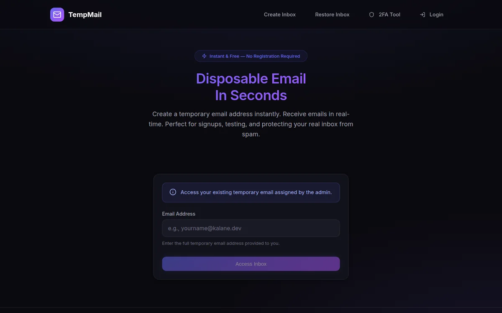
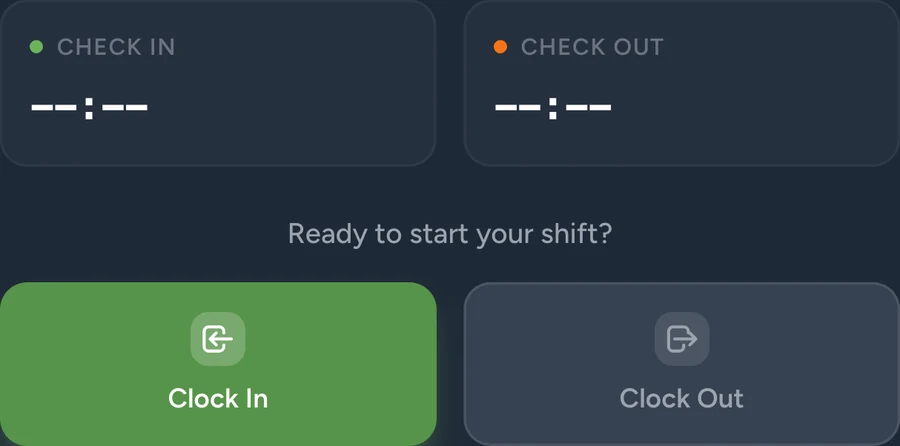

Freelance Web Developer
Website yang bekerja untuk bisnis.
Mengerjakan landing page, WordPress, dan WooCommerce—mulai dari implementasi antarmuka sampai penyiapan alur penjualan.
00
Web developer · Kudus, Indonesia
Mengubah kebutuhan nyata menjadi produk web yang cepat, jelas, dan enak dipakai.
01 / Tentang
Saya suka pekerjaan di titik temu antara logika sistem dan pengalaman manusia.
Lulusan S1 Sistem Informasi Universitas Muria Kudus dengan pengalaman membangun aplikasi web dan mobile, sistem internal, serta toko digital. Saya nyaman bergerak dari analisis kebutuhan sampai produk siap digunakan.
Pendekatan saya sederhana: pahami masalahnya, pilih teknologi secukupnya, lalu kirim hasil yang bisa diuji. Basis data, REST API, deployment Linux, DNS, SSL/HTTPS, dan dukungan pengguna ikut selesai.
02 / Pilihan karya

Disposable inbox dengan penerimaan real-time, masa berlaku otomatis, multi-domain, dan token pemulihan.

Pengembangan dan implementasi sistem workforce: absensi geofencing, dashboard web, aplikasi mobile native Flutter, alur persetujuan, serta payroll.
03 / Pengalaman
Mengerjakan landing page, WordPress, dan WooCommerce—mulai dari implementasi antarmuka sampai penyiapan alur penjualan.
Terlibat dalam pengembangan sistem personalia Laravel/Flutter, sales tracking, presensi berbasis geofencing, payroll, jaringan dasar, dan deployment VPS.
Mendampingi praktikum pemrograman, basis data, dan pengembangan sistem informasi; memberi asistensi teknis serta menyiapkan perangkat laboratorium.
Universitas Muria Kudus, Fakultas Teknik. Fokus pada analisis dan perancangan sistem, pengembangan aplikasi, serta manajemen basis data.